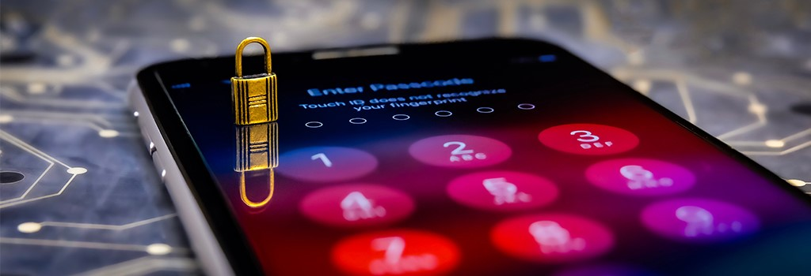

Digitale veiligheid:
security, beveiliging zorgt ervoor dat je beveiligd bent tegen hackers. Het beveiligen van onze digitale gegevens gaat voornamelijk over 3 aspecten:
Vertrouwelijkheid, hierbij heb je authenticatie. Dat is voordat er toegang is tot de persoonlijke gegevens, een controle om te kijken of de gebruiker wel toegang mag hebben, bijvoorbeeld een wachtwoord of vingerafdruk
Integriteit, hierbij heb je autorisatie. Er is dan een controle welke rechten een vertrouwde gebruiker allemaal heeft. Als dat zo is, kunnen in computernetwerken bepaalde bestanden alleen beschikbaar zijn voor gebruikers met een specifieke rol. Om toegang te krijgen tot de bestanden hoeft er niet apart worden ingelogd, maar een autorisatie.
Beschikbaarheid, de data moet altijd beschikbaar zijn. Daarvoor gebruik je back-ups, bijvoorbeeld een USB-stick of een externe harde schijf. Men raad dan ook het 3-2-1-systeem voor back-ups, 3 kopieën van de gegevens, 2 verschillende manieren opslaan, 1 kopie op een andere locatie bewaren.
Bedreigingen:
Criminelen maken vaak gebruik van verschillende technieken om achter jouw en andermans gegevens te komen. De meest gebruikte technieken zijn: Social engineering, Phishing en Malware.
Social engineering is geen digitale techniek, hierbij gebruiken ze psychologische trucjes om mensen dingen te laten doen zoals wachtwoorden vrijgeven. Zij doen zich als andere mensen voor, waardoor de mensen die Social engineering gebruiken achter hun gegevens kunnen komen.
Phishing wordt veelal gebruikt met Social engineering. De mensen die Phishing gebruiken doen zich voor als bank bijvoorbeeld. Ze zeggen dat er dan iets fout is met je rekening en ze laten je naar een kopie van de website van de bank gaan. Je moet dan inloggen en dan kun je niets, dan hebben de mensen van Phishing je gegevens.
Bij Malware wordt er geprobeerd sommige bestanden van jezelf te versleutelen, door middel van bijvoorbeeld zwakke plekken in de software die nog niet bekend zijn bij de ontwikkelaar. De hackers proberen dan achter je gegevens te komen en als ze die hebben, kunnen ze je af persen in ruil voor geld.
Aanvallers en verdedigers:
In de digitale wereld zijn er aanvallers en verdedigers, de verdedigers maken steeds betere manieren van beveiliging en aanvallers verzinnen steeds nieuwe manieren om die nieuwe manier te doorbreken.
Een paar bekende voorbeelden van computercriminaliteit zijn: diefstal (digitaal), fraude en afpersingen. De hackers die dat doen plegen computervredebreuk, en dat is strafbaar.
Maar hackers zijn niet altijd slecht, je hebt ook ethische hackers. Zij helpen juist het internet veiliger te maken. Ethische hackers melden een beveiligingslek bij het bedrijf, zo kan het bedrijf het lek dichten. Deze bedrijven geven zulke hackers dan beloningen. Ethische hackers zijn dan eigenlijk ook strafbaar, maar dat zijn ze niet omdat zij het internet helpen te beveiligen.
Je hebt ook een Zero Day. Dat zijn belangrijke middelen die kunnen worden gebruikt voor hacken. Je kunt er veel schadelijke aanvallen mee doen, zoals systemen platleggen. Natuurlijk gebruiken criminelen ze om te hacken, maar ook beveiligingsbedrijven kopen ze met het doel om lekken te dichten.
Maatregelen:
Er zijn veel verschillende maatregelen die je kunt nemen om de veiligheid van een systeem te vergroten. Je kunt deze maatregelen verdelen in eigenlijk 3 soorten:
Preventie, hierbij moet bijvoorbeeld software up-to-date blijven. Dat betekent dat de software ontwikkelaar op de hoogte moet zijn van manieren waarop je goed beveiligde software maakt. Of gebruik maken van encryptie van gegevens als ze worden opgeslagen of verzonden, het mag natuurlijk niet in de verkeerde handen terechtkomen.
Detectie, dit betekent controle op misbruik. Bijvoorbeeld controleren hoe vaak een inlogpoging wordt gedaan met een bepaalde gebruikersnaam. Bijvoorbeeld de toegangscode op je telefoon. Je hebt ook een belangrijk detectiehulpmiddel, de firewall. Die scant al het inkomend netwerkverkeer. Het controleert op kwaadaardigheid in datapakketten en of verkeer afkomstig is van een betrouwbare bron.
Repressie en correctie, repressie is dat als er sprake is van een aanval of als er malware is aangetroffen, dan moeten er natuurlijk maatregelen genomen worden zoals de systemen uitzetten. Correctie is dat de eventuele schade die er gekomen is, dat wordt hersteld.
